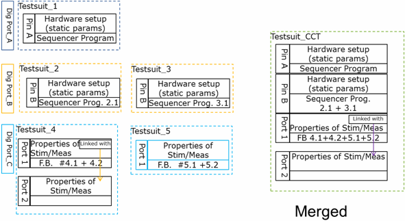
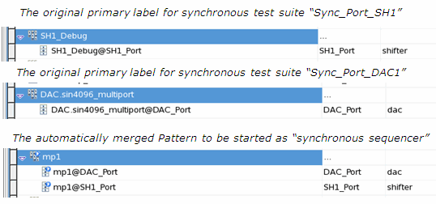
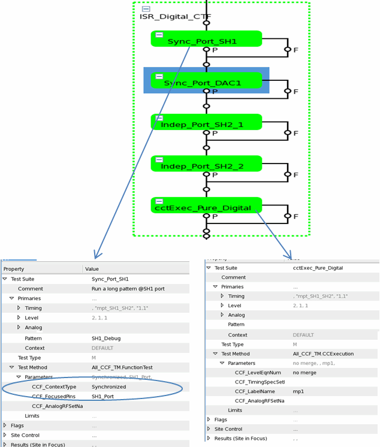

Merging the setups
Merging the analog and RF setups
Analog and RF setups can be created in createAnalogSetup() and createRFsetup() function with the related APIs. In concurrent and development mode, CCF merges the analog sets and RF definitions of individual tests into one analog set. The figure below shows the merging of analog sets and RF definitions.

Merging the RF sequencer blocks on the same RF port
CCF can merge the RF definitions using the same port in the native test suites into a new RF definition according to the following conditions.
For the merging of measurement definition
- The measurement conditions with the type of "Scalar_out", "CW Power out", "Mod Power out", "Phase Noise" and "Noise Power" can be merged into one measurement definition.
- A scalar measurement and a dual scalar measurement cannot be merged into a new measurement definition.
- The measurement definitions to be merged must have the same value for the following properties: Pin Name, Tester LO, Master Clock Source, Site interlacing.
- A measurement definition using the "Used with" definition can be merged with a measurement definition without "Used with" definition.
- The other properties can be different. But a warning message will be prompted during the merging.
For the merging of stimulus definition,
- Only the same type of stimulus definition can be merged.
- The stimulus definition to be merged must have the same value for the following properties: Pin Name, Stimulus Type, Stimulus MUX, Multi-Pin Stimulus and relevant slave pin (pin name and its "Stimulus Path"), Site interlacing and relevant SMB setting, Stimulus Instrument, and Used with Definitions.
- The value of Stimulus Path can be different. If the Stimulus Path of one definition is specified as Amplifier, the Stimulus Path of the merged stimulus definition will be Amplifier. But a warning message will be prompted.
- The other properties can be different but a warning message will be prompted.
A stimulus definition cannot be merged with a measurement definition.
During the merging of the RF definitions, CCF will generate a new frequency list with the name mergFrequencyList_<test suite name>. The content of the new frequency list includes the contents of all the original frequency lists. The merged RF definition will use the merged frequency list. If there is "Used with" definition before merging, the frequency list name in the "Used with" definition will not be changed after merging.
The value of Frequency List Index in each sequence block will be set according to the new frequency list. If the value of Frequency List Index is a variable, it will not be changed.
The table below shows an example of processing the frequency list in the CCF.
Test suite |
Frequency List name |
Contents of list |
Index in frequency list |
New index in merged frequency list |
|---|---|---|---|---|
RF_TS1 |
Freq_list_1 |
1.0e9 1.1e9 1.2e9 1.3e9 |
2 |
2 |
RF_TS2 |
Freq_list_2 |
1.2e9 1.3e9 1.4e9 1.5e9 |
3 |
5 |
RF_TS3 |
Freq_lis_3 |
1.6e9 1.7e9 |
1 |
7 |
RF_merged |
mergFrequencyList_RF_merged |
1.0e9 1.1e9 1.2e9 1.3e9 1.4e9 1.5e9 1.6e9 1.7e9 |
|
|
If all the RF definitions to be merged use the same frequency list, no new frequnecy list will be created and the original one will be used in the merged definition.
Guidelines for the test method programming
- Handling the function block ID
The function block ID is changed in the merged RF definition. To ensure the test method works correctly both in the concurrent mode and in the serial mode, you need to use the function
CCTgetFuncBlkID()to offset the function block ID. UseCCTgetFuncBlkID()+idto access a function block, id is the original function block id.SEQ_SETTINGS::RF_MEAS_CW_OUT param1; RF_MEAS_BASE (name).getSequenceParam(CCTgetFuncBlkID()+1,name,param1);
- Handling the index of frequency list
In the merging of RF setup, a new frequency list with the name mergFrequencyList_<testsuit_name> is created and applied as the property "Frequency List" of the merged RF definition. You need to use
CCTgetFrequencyIndex(int original_index)to convert the original frequency index to the new index in the new frequency list. - Retrieving waveform in RF TX measurement
Register the TX pin with the function CCTregisterTX().
The captured waveform ID is changed in the merged setup. To ensure the test method works correctly both in the concurrent mode and in the serial mode, you need to offset the waveform ID with the function
CCTgetUploadID(). UseCCTgetUploadID()+ito access the captured waveform with the original ID i.SMC_GET_COMPLEX_WAVEFORM("dgtPIn","handle_name",CCTgetUploadID()+i); //here "i" is the original waveform ID; start from 0;If site interlacing is enabled, access the waveform as below:
int sitelacing_id = MEAS_DEF().getInterlacedWaveformId(CCTgetUploadID()+i); //here i is the original waveform ID, start from 0 SMC_GET_COMPLEX_WAVEFORM("dgtPIn","handle_name",sitelacing_id);
Merging patterns
CCF merges the patterns of the synchronized test suites into one multiport burst label in the concurrent and development mode. You can define the required ports involved in the pattern merge with the test method parameter CCF_FocusedPins, which means only the ports defined in the parameter will be merged and the other ports will be ignored. If the CCF_FocusedPins is left blank, all ports in the original pattern will be merged.
If the same port is used in more than one test suite, the patterns for this port will be serially merged.
If two synchronized test suites use different timing sets, a CTIM command will be automatically added to the burst.
The two figures below show the merging of the patterns in the synchronized test suites.


Merging timing setups
The timing setup used in the synchronized test suites and the first independent test suite will be merged when the block is executed in concurrent and development mode.The process of timing merge is similar to the process of merging patterns.
Merging level setups
In the concurrent and development mode, level setup merging can be done for the levels defined per port in the synchronized test suites. The levels defined for the pins and ports specified in the parameter CCF_FocusedPins of each test suite will be merged with the level equation number specified in the parameter CCF_LevelEqnNum of the CCF execution test suite. The level equations of the pin(s)/port(s) not included in the CCF_FocusedPins of any test suite will not be merged. If no pins/ports are specified for the parameter CCF_FocusedPins in the CCF block, the level setups used in the CCF block will not be merged.
If the same spec name is used in different level equations, CCF will check whether the defined values are the same. If yes, the level setup will be merged with the spec name. If the values are different, CCF will rename the duplicated spec name and change all the equations using it.
If the same or less level setups are used in the current CCF block comparing to one of the privious CCF blocks, it will try to reuse the merged euqation set created by the previous CCF block.